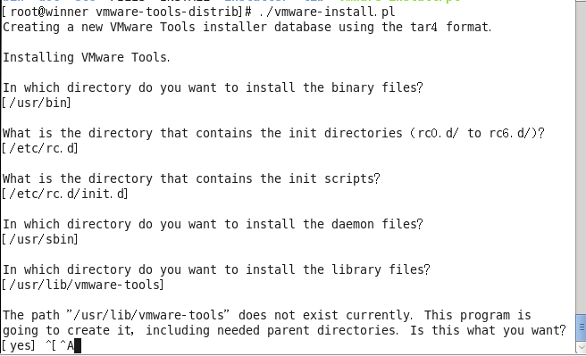
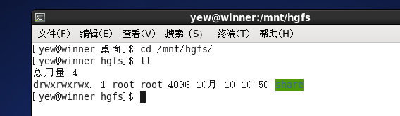

1.VMware Workstation菜单栏中，选择“虚拟机”，”安装VMware Tools...“。（注：此时下方可能会弹出“确保您已登录客户端”之类的提醒忽略就好了。）
2.使用root权限新建目录 mkdir -p /mnt/cdrom
3.复制VMTools安装包至新建的目录 cp VMwareTools-10.2.0-7259539.tar.gz /mnt/cdrom
4.解压安装包 tar -zvxf VMwareTools-10.2.0-7259539.tar.gz
5.进入解压目录，然后安装 cd /mnt/cdrom/vmware-tools-distrib 安装：./vmware-install.pl
6.默认安装，亦可改变路径（根据自己的想法）

1.虚拟机右键→设置→选项→共享文件夹→总是启用→添加(D://share)
2.验证共享文件夹是否生效 注：vmware中默认的共享路径是 /mnt/hgfs 即：cd /mnt/hgfs
3.
4.在这个目录下就能看windows的文件，也可以从linux中拷贝文件到这个目录，则在windows也能看见。